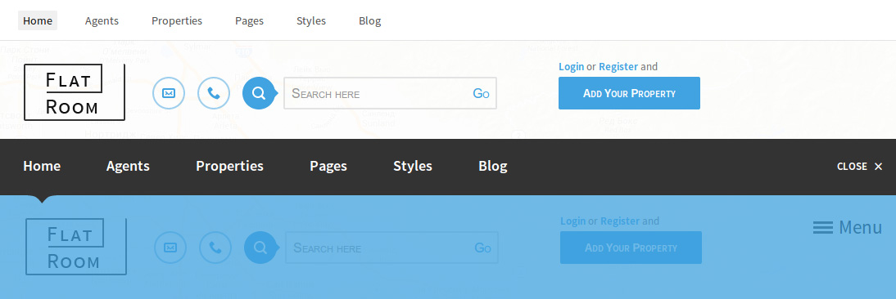

revision #1 dated 01.01.2013
Onepage website template
User Guiderevision #1 dated 01.01.2013
Onepage website template
User GuideFlatroom is theme, which is created to make impression on you and your customers. We offer you an up-to-date and really high quality work with outstanding design and well-thought usability approach. This template can help you to achieve a significant increase of the conversion rates and number of positive feedback, as well as will simply be a nice surprise for your customers.
Please do not forget to rate «Flatroom» on ThemeForest. This can be done in Downloads area. Just select «Flatroom» in the Download list and rate it. We really appreciate your feedback and will be grateful for your opinion.

Besides, we will be happy to meet you in social networks and on websites.
This theme has two variants of appearance: Light and Dark. To change them you need to specify the required class for 'body'
<body class="light"> ... </body> <body class="dark"> ... </body>
Theme has the following main structural units:
headerIt has the following structure
...
The menu, that is located in the header, has two options of appearance
First option has the following structure
Second option has the following structure
<body class="main-menu-visible">
The Main Content can have a Sidebar (left or right) or be without it.
...
The Main Content may have the following blocks
The Sidebar may have the following blocks
The Home Page can have some design options
The view of the map can be configured in the file 'index.html'
where
location_default - the center point of the map and the initial scale
uploadUrl - path to the markers image
siteUrl - the url of the site
loading - preloader
To add a marker on the map, it is necessary to add an element '.properties-on-map' into the block
It has the following structure
Any Social Icons from this list can be placed in the footer
To add the icon you have to insert the following code
where icon-facebook - the code of your icon
I'm using several CSS files in this theme:
|
buttons.css animation.css social-icons.css social-icons-embedded.css social-icons-ie7.css social-icons-ie7-codes.css |
Styles for social icons. |
|
font-awesome.css font-awesome.min.css font-awesome-ie7.css font-awesome-ie7.min.css |
Styles for Font Awesome |
|
bootstrap.css bootstrap.min.css |
Defines main bootstrap classes. |
|
bootstrap-responsive.css bootstrap-responsive.min.css |
Defines classes of the responsive design part. |
| jquery.jqplot.css | Styles for Plotting Plugin |
| responsive.css | Contains all of the responsive stylings for the theme |
| style.css | Contains all of the specific stylings for the theme. The file is separated into several sections. Sections stands out from the other CSS specific code using following pattern: |
/****************************************************************************** Section Title *******************************************************************************/ /* Section Subtitle */
If you would like to edit a specific section of the site, simply find the appropriate label in the CSS file, and then scroll down until you find the appropriate style that needs to be edited.
This theme imports three Javascript files.
| Name | Description | Url |
|---|---|---|
| jQuery | Core Javascript library | ajax.googleapis.com/ajax/libs/jquery/1.10.2/jquery.min.js |
| jQuery UI | jQuery UI is a curated set of user interface interactions, effects, widgets, and themes built on top of the jQuery JavaScript Library. | jqueryui.com |
| Bootstrap | Sleek, intuitive, and powerful front-end framework for faster and easier web development | getbootstrap.com/2.3.2 |
| jqPlot | jqPlot produces beautiful line, bar and pie charts with many features. | jqplot.com/ |
| HTML5 Shiv | The HTML5 Shiv enables use of HTML5 sectioning elements in legacy Internet Explorer and provides basic HTML5 styling for Internet Explorer 6-9, Safari 4.x (and iPhone 3.x), and Firefox 3.x. | github.com/aFarkas/html5shiv |
| CarouFredSel | jQuery.carouFredSel is a plugin that turns any kind of HTML element into a carousel. | caroufredsel.dev7studios.com |
| TouchSwipe | A jquery plugin to be used on touch devices such as iPad, iPhone, android etc | github.com/mattbryson/TouchSwipe-Jquery-Plugin |
| FancyBox | fancyBox is a tool that offers a nice and elegant way to add zooming functionality for images, html content and multi-media on your webpages. | fancyapps.com |
| Selectbox | Custom select box replacement inspired by jQuery UI source. | bulgaria-web-developers.com/projects/javascript/selectbox/ |
| Source Sans Pro | Metornic Frontend uses Open Sans web font from google fonts: http://fonts.googleapis.com/css?family=Source+Sans+Pro:200,400,600,700,200italic,400italic,600italic,700italic | google.com/webfonts |
| Font Awesome | Font Awesome gives you scalable vector icons that can instantly be customized — size, color, drop shadow, and anything that can be done with the power of CSS. | fontawesome.io |
| Social Icon | Social Icon gives you scalable vector social icons that can instantly be customized — size, color, drop shadow, and anything that can be done with the power of CSS. |